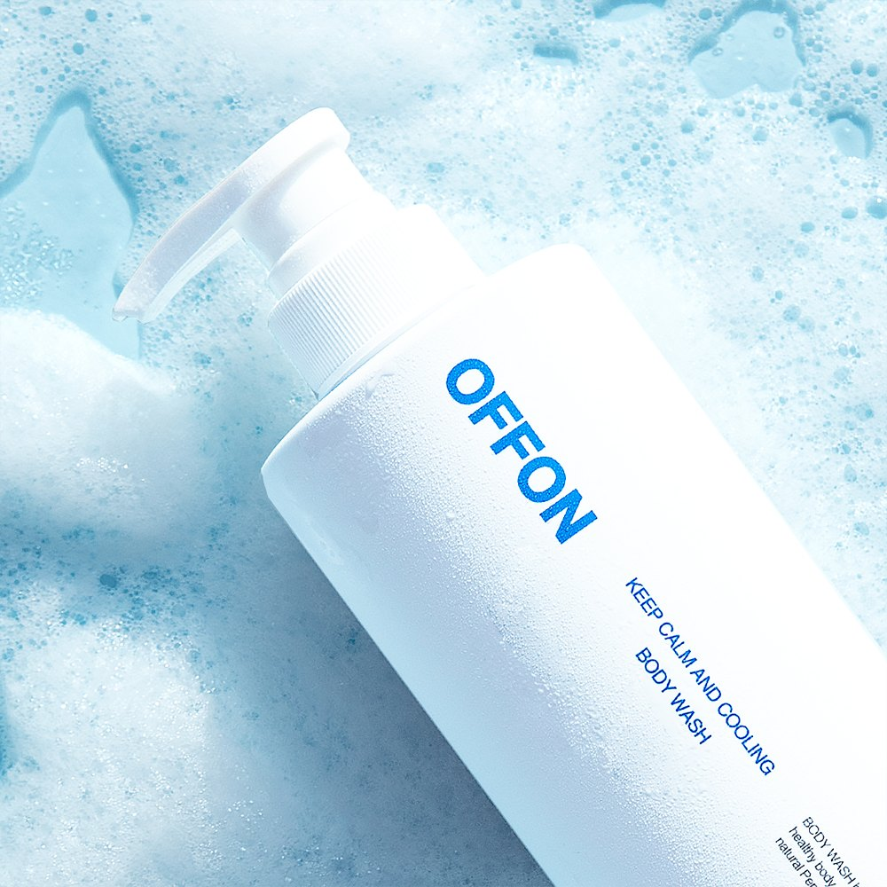
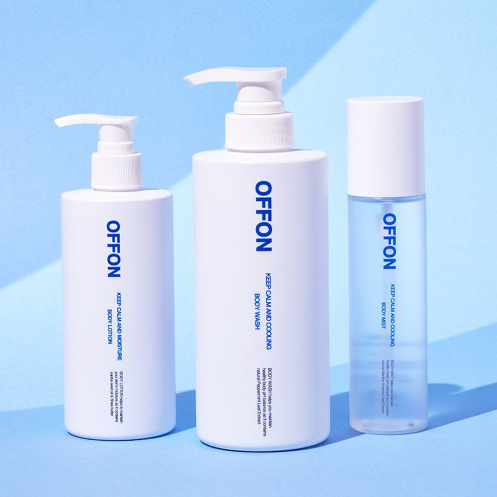
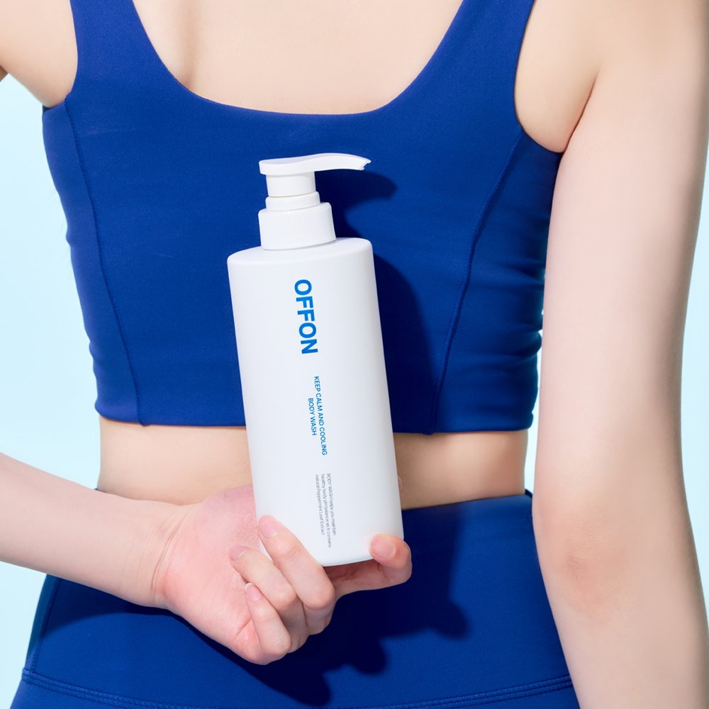

OFFON Keep Calm and Cooling Body Wash Review: Korean Salicylic Acid Body Wash for Back Acne, Plus Wholesale Sourcing

1. OFFON Keep Calm and Cooling Body Wash Review: Overview
This OFFON Keep Calm and Cooling Body Wash review looks at a Korean body wash made for a problem the face routine never covers: back acne, chest breakouts and rough, bumpy skin. OFFON (오프온) is a Korean body-care brand, and its Keep Calm and Cooling Body Wash comes in a clean white 500ml pump bottle with a salicylic acid peeling formula and a cooling finish.
In Korea it's sold as a 등드름 (back acne) body wash, and retailer listings say it is registered with Korea's Ministry of Food and Drug Safety as a functional cosmetic for relieving acne-prone skin. The gel is weakly acidic at around pH 5.5, and it's made with coconut-derived surfactants that build a dense, creamy lather from one pump.
Korean reviewers mostly talk about two things: the cool, refreshing feel after rinsing (from peppermint leaf extract and menthol) and a fresh aqua-floral scent. Retailers also list it as hypoallergenic-tested and PETA vegan.
"A daily shower step for back and chest breakouts, with a cooling finish that feels great in Korean summers."
2. Key Ingredients: BHA, AHA, PHA, Cica and Menthol
Body skin is thicker than facial skin, so OFFON layers several gentle exfoliants with soothing and hydrating ingredients. Here's what the published ingredient list contains:
| Ingredient Group | From the Ingredient List | Role |
|---|---|---|
| 🧪 BHA | Salicylic Acid | Oil-soluble peeling care for clogged pores |
| 🍋 AHA | Mandelic Acid, Gluconic Acid | Gentle surface exfoliation |
| 🫧 PHA | Lactobionic Acid | Mild exfoliation with moisture |
| 🌿 5X Cica | 5X Cica complex (centella-derived compounds) | Soothing |
| 💧 Hydration | Sodium Hyaluronate Crosspolymer, cactus & seaweed extracts | Helps skin feel less tight after showering |
| ❄️ Cooling | Mentha Piperita (Peppermint) Leaf Extract, Menthol | Refreshing, cooling feel |


The listings we checked don't publish the exact percentage of salicylic acid, so we don't state one. Ingredient lists can change; always check the bottle.
3. Specifications
| Specification | Details |
|---|---|
| Brand | OFFON (오프온) · Republic of Korea |
| Product | Keep Calm and Cooling Body Wash (킵 캄 앤드 쿨링 바디워시) |
| Size | 500ml / 500g (17.6 oz) pump bottle |
| pH | Weakly acidic, around pH 5.5 |
| Type | Gel body cleanser; sold as a functional cosmetic for acne-prone skin relief |
| Surfactants | Coconut-derived mild surfactants (per retailer listings) |
| Scent | Fresh aqua-floral, with a cooling finish |
| Claims (retailer listings) | Hypoallergenic-tested, PETA vegan, free of 19 avoided ingredients |
| Korean List Price | ₩32,000 (500g, per Korean review platform Unpa) |


Photo note: These are the 5 real product photos from the Korean listing. We didn't add any AI-generated images.
4. How to Use It
🚿 Daily Body-Breakout Shower Routine
- Step 1 — Wet skin: Use lukewarm water. Very hot water can leave acne-prone skin drier.
- Step 2 — Lather: Put 1–2 pumps on a shower towel or your hands and build foam.
- Step 3 — Massage: Roll the lather over your back, chest and shoulders in gentle circles. Don't scrub hard.
- Step 4 — Rinse well: Rinse thoroughly, especially along the spine and hairline.
- Step 5 — Moisturize: Finish with a light, non-greasy body lotion, and wear sunscreen on exposed skin when using exfoliating acids.
5. Pros & Cons
- ✅ Pro: BHA + AHA + PHA in one daily wash, built for body breakouts and bumpy skin.
- ✅ Pro: Weakly acidic (around pH 5.5) with five cica compounds and hyaluronic acid.
- ✅ Pro: Rich lather and a cooling finish many Korean reviewers love.
- ✅ Pro: Big 500ml pump bottle that's easy to use in the shower.
- ⚠️ Con: It's a rinse-off cosmetic: results are gradual and depend on regular use.
- ⚠️ Con: Menthol and fragrance may not suit very reactive skin.
- ⚠️ Con: The listings don't state the salicylic acid percentage.
6. Who It Suits (and Who Should Skip It)
- Suits: Anyone with back or chest breakouts, clogged pores or keratosis-pilaris-like bumps.
- Suits: People who sweat a lot (gym, sports, hot summers) and like a cool, fresh shower finish.
- Suits: Retailers looking for a Korean body-acne wash with a clear story and a full product line (lotion, mist).
- Skip if: You're allergic to salicylates, your skin is broken or sunburned, or you dislike scented products.
7. OFFON Body Wash FAQ
What is OFFON Keep Calm and Cooling Body Wash?
It's a 500ml (500g) Korean body wash from OFFON (오프온). It combines salicylic acid (BHA) with mandelic and gluconic acid (AHA), lactobionic acid (PHA), a 5X cica complex, hyaluronic acid, peppermint leaf extract and menthol, in a weakly acidic gel around pH 5.5.
Does OFFON body wash help back acne?
It's sold in Korea for back acne (등드름), chest breakouts and rough, bumpy skin, and retailer listings say it's registered with Korea's MFDS as a functional cosmetic for relieving acne-prone skin. It's still a cosmetic wash, not a medicine, so see a dermatologist for painful or persistent acne.
Is it suitable for sensitive skin?
Retailers describe it as hypoallergenic-tested, vegan and free of 19 ingredients the brand avoids, with coconut-derived surfactants. Because it contains exfoliating acids and menthol, patch test first and don't use it on broken or sunburned skin.
Can I order OFFON body wash wholesale from Korea?
Yes. For bulk B2B and export orders, contact DUCKCHEON KOREA by WeChat (intid85), WhatsApp (+82 10-2754-9616) or email (duckcheonkorea@gmail.com). For personal use, use the Amazon button.
8. B2B Wholesale & Export Sourcing
Want to Source OFFON Body Wash Directly from Korea?
Do you need authentic OFFON Keep Calm and Cooling Body Wash or other Korean functional body care for your stores, e-commerce channels or distribution network?
DUCKCHEON KOREA (`https://dctrade.co.kr/`) supplies verified, 100% genuine Korean cosmetics directly from South Korea to buyers and partners worldwide. Contact our export and curation desk anytime via WeChat (`intid85`), WhatsApp (`+82 10-2754-9616`) or Email (duckcheonkorea@gmail.com) for wholesale quotes, set configurations and product inquiries.
🛒 Single-Unit Retail / Sample Buyers: Want a bottle for personal use? Click Buy on Amazon below to check the OFFON body wash listing on Amazon. For bulk B2B wholesale & export orders of OFFON from South Korea, contact our Seoul desk via WeChat, WhatsApp or email.